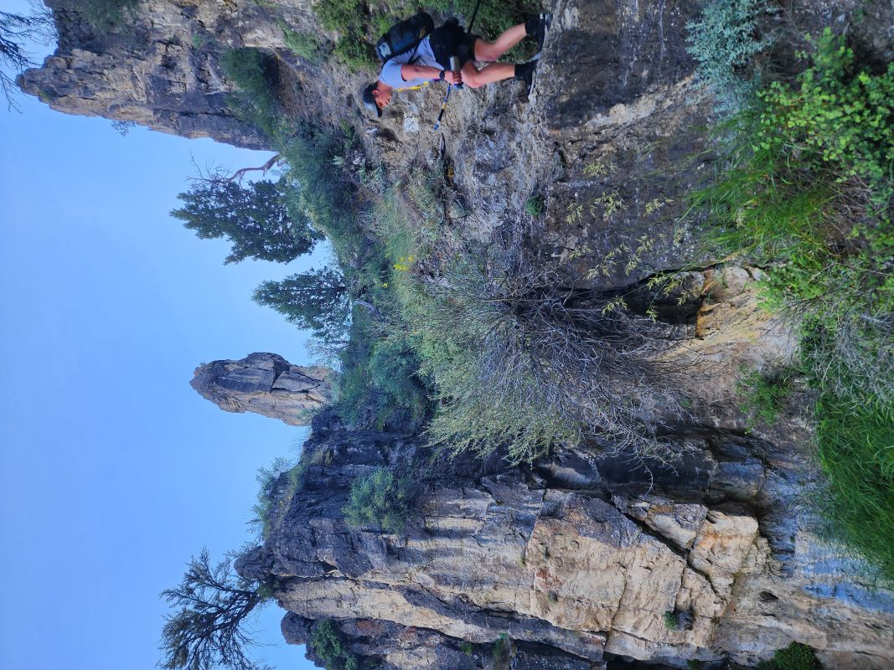
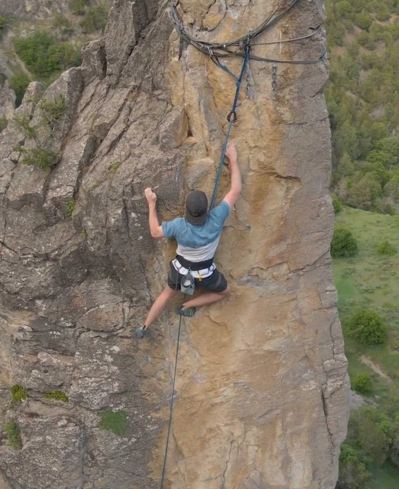

CLIMB ON.
Sport climbing has been growing in popularity, and for good reason. Climbing can be both relaxing and exhilarating at the same time, all while having a great community. How do you start climbing though? Well, first you have to decide if you want to climb indoors or outdoors. This website will be focusing out outdoors mainly, so if you want to be indoors this won't be the best information for you. With that out of the way, there is really only 2 things you need to start climbing outdoors if you have a friend that climbs already - a harness and climbing shoes. Keep in mind this is the bare minumum, but to just try climbing out, this is what you need. The harness I recommend is the Black Diamond Momentum harness. You can usually find it for around $65, and it's got plenty of gear loops and is decently comfortable. For shoes, you have options. The thing to look for though is the shape of the shoe. For beginners I recommend a style called flats. As the name suggests, the shoes are flat on the bottom, as opposed to the other option, a more advanced climbing shoe that has a downward curve the whole way - also called an "aggressive" shoe. So you have all the bare minumum gear that you need, where do you climb? This problem is solved pretty easily. There is an app for IOS and Android called Mountain Project. This app shows where climbing spots are, how hard they are, a description, and even sometimes pictures. This app is primarily where I find climbing spots. Otherwise you can find spots from other climbers as well. One of the things you have to keep in mind though, is that not every spot is compatible with the type of climbing you want to do. For example, since you are beginning, you want to do top roping. Most spots are not able to be top roped, and therfore you will be dissapointed when you get to the spot. On mountain project, climbs that are top rope accessable with be labled with "TR".
Now you have your gear, and you have found your place to climb, how should you climb it? There are 4 main types of climbing. Bouldering, top roping, lead climbing, and free soloing. If this is your first time, you should be top roping. This means that the rope is set up at the top of the mountain before you start climbing. Your belayer will take out slack as you climb. This way if you slip and fall, you will only fall around a foot. You are very unlikely to get hurt this way.
Setting up a top rope is pretty easy, every place that is labeled TR accessable will have a hiking path of some sort to the top of the mountain, where the top chains are. There are multiple ways to set up your top rope anchor - the thing that holds the rope. The way I found works best for me is to tie an overhand knot in a sling 3/4ths of the way down the sling, then adding 2 caribiners on each side, placing 2 caribiners through the same spot on the side that is meant to hold the rope. Your climber friend will know what this means if it's a little confusing, and might even have their own top rope setup.